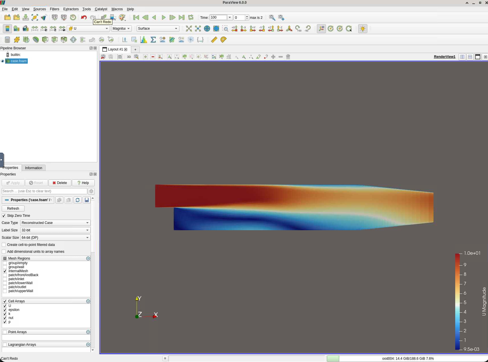
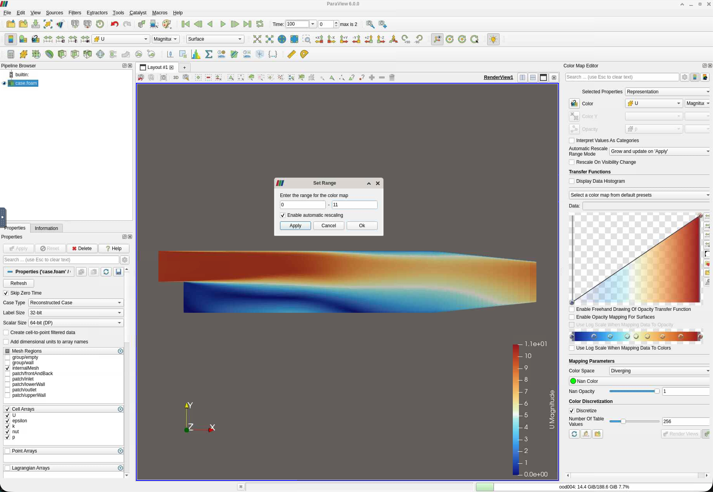
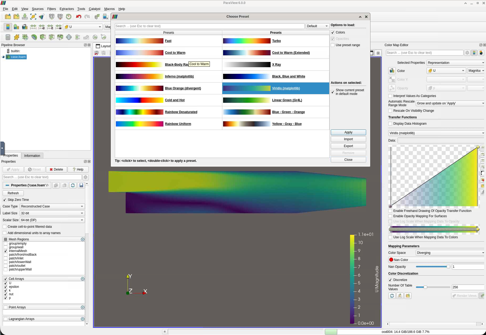

ParaView: visualising your OpenFOAM results
A guided tour on the pitzDaily backward-facing step
ParaView is an open-source, cross-platform visualisation application designed for large-scale scientific datasets. It can handle the full range of OpenFOAM output — structured and unstructured meshes, time series, and multi-processor reconstructed fields — and provides an interactive 3-D render view alongside quantitative analysis tools such as line plots, surface integrals, and data export. For HPC workflows it can also render server-side: on the course cluster you open it inside a remote desktop served through JupyterLab, so the heavy rendering happens on the compute node and you interact with it in your browser.
This tutorial walks through the most important ParaView features using the pitzDaily backward-facing step case as a concrete example. By the end you will be able to visualise velocity and pressure fields, extract profiles, add streamlines, and export publication-ready images.
All steps assume you are working on the course cluster through JupyterLab (https://mech501.calculquebec.cloud/). If you have not set that up yet, see the Cluster and JupyterLab pages.
1 Open the case
In the JupyterLab Launcher, open the Desktop (VNC) tile, then double-click the Paraview icon to start ParaView.
In ParaView, go to File → Open.
Navigate to your case directory under scratch, e.g.
/scratch/$USER/pitzDaily/Select the trigger file
pitzDaily.foam(create it first from a terminal if it does not exist:touch pitzDaily.foam). The name doesn’t matter as long as it ends with.foam.Click OK, then click Apply in the Properties panel on the left.
ParaView reads all time directories at once. You should see the geometry appear in the render view — a long rectangular channel with a small step on the left.
Nothing visible? Make sure Wireframe or Surface is selected in the toolbar representation dropdown (not Points), and press R to reset the camera to fit the geometry.
2 Select a field to display
At the top of the render window there are two dropdowns side by side:
[ U ▾ ] [ Magnitude ▾ ]- The left dropdown selects the field:
U(velocity),p(pressure),k(turbulent kinetic energy),epsilon, etc. - The right dropdown selects the component:
Magnitude,X,Y, orZ.
For a first look, set it to U → Magnitude. The channel will be coloured by flow speed, with blue at rest and red at peak velocity.

2.1 Rescale the colour map
The automatic range may include boundary artefacts. Click the Rescale to Data Range button (the double-arrow icon in the colour bar, or View → Color Map Editor → Rescale) to fit the colour range to the actual field values.

To change the colour map go to View → Color Map Editor, click Choose Preset (the grid icon), and select a map. Cool to Warm and Viridis are good choices for velocity; avoid rainbow maps for published work.

3 Explore the geometry with Clip and Slice
3.1 Slice — view a 2-D cross-section
- With the
.foamreader selected in the Pipeline Browser, go to Filters → Search (or press/) and typeSlice. - In the Properties panel set the Normal to
(0, 0, 1)(the z-axis) and Origin to(0, 0, 0)— the midplane of the 2-D domain. - Click Apply.
You now have a flat 2-D view of the velocity field across the channel — this is the canonical way to inspect pitzDaily results. Note, that the simulation was already 2-D. Therefore, you should see essentially the same picture.
3.2 Clip — remove half the domain
- Apply Filters → Clip to the reader.
- Set the plane normal to
(0, 1, 0)(y-axis) and adjust the origin to cut through the step height. - Click Apply.
Use Clip to reveal interior structure in 3-D cases. For pitzDaily (which is essentially 2-D), you remove basically half the domain.
4 Velocity vectors
Vectors help you see flow direction, not just magnitude.
- Select the
.foamreader (or the Slice filter) in the Pipeline Browser. - Go to Filters → Alphabetical → Glyph (or search for
Glyph). - In Properties:
- Glyph Type: Arrow
- Orientation Array: U
- Scale Array: U, Scale Factor: adjust until arrows are legible (start with
0.005) - Glyph Mode: Every Nth Point — set N to something like
5to avoid overcrowding
- Click Apply.
The recirculation zone behind the step should now be clearly visible as arrows pointing upstream near the bottom wall. (hide the .foam to see this better)
5 Streamlines
Streamlines trace the path a massless particle would follow in the velocity field.
- Select the
.foamreader in the Pipeline Browser. - Filters → Search → Stream Tracer.
- In Properties:
- Vectors: U
- Integrator Type: Runge-Kutta 4-5
- Seed Type: High Resolution Line Source
- Set the line from
(0, 0, 0.0005)to(0, 0.025, 0.005)— a vertical seed line just downstream of the step
- Set the line from
- Max Streamline Length: 3 (metres — adjust to your domain size)
- Click Apply.
Colour the streamlines by U Magnitude to show speed along the path. You should see streamlines curling around the recirculation bubble behind the step.
6 Plot a velocity profile over a line
This extracts quantitative data — e.g. the U-velocity profile at a given x-station — which you can compare against reference data or analytical solutions.
- Select the
.foamreader. - Filters → Search → Plot Over Line.
- Set the line endpoints to sample a vertical profile at, say, x = 0.1 m:
- Point 1:
(0.1, -0.02, 0.05) - Point 2:
(0.1, 0.05, 0.05)
- Point 1:
- Click Apply.
A new Line Chart View opens automatically. To show only U_X:
- In the Properties panel under Series Parameters, uncheck everything except
U_X.
6.1 Export the data
Right-click anywhere in the chart and choose Export Scene (or go to File → Export Scene) to save the profile as a CSV for further analysis in Python or MATLAB.
7 Pressure field
Switch the display field to p to inspect the pressure distribution.
Key things to look for in pitzDaily:
- A high-pressure stagnation region on the front face of the step.
- A low-pressure core in the recirculation zone immediately behind the step.
- Pressure recovering toward the outlet as the flow reattaches.
Pressure is stored as kinematic pressure (p/ρ, units m² s⁻²) in incompressible OpenFOAM cases — multiply by the fluid density if you need Pascals.
8 Annotate and adjust the view for export
8.1 Camera controls
| Action | Mouse / Keyboard |
|---|---|
| Rotate | Left-click drag |
| Pan | Middle-click drag (or Shift + left drag) |
| Zoom | Scroll wheel |
| Reset camera | R |
| Set to +X / +Y / +Z view | Numpad 1 / 2 / 3 (if available) |
For the pitzDaily 2-D case, lock to the XY plane with View → Standard Views → +Z.
8.2 Add a colour bar and title
- View → Show Color Bar (if not already visible).
- Double-click the colour bar label to edit the title (e.g. change
U_MagnitudetoVelocity magnitude (m/s)). - View → Annotation → Add a Text annotation for figure titles or labels.
8.3 Save a screenshot
File → Save Screenshot: - Set resolution to at least 1920 × 1080 for reports (or 300 dpi equivalent for journal figures). - Format: PNG for lossless, JPEG for smaller file size.
9 Quick reference — most-used filters for CFD
| Filter | What it does | Where to find it |
|---|---|---|
| Slice | 2-D cross-section through the domain | Filters → Slice |
| Clip | Removes part of the domain | Filters → Clip |
| Glyph | Draws arrows / cones for vector fields | Filters → Alphabetical → Glyph |
| Stream Tracer | Computes streamlines | Filters → Stream Tracer |
| Plot Over Line | Extracts a 1-D profile and plots it | Filters → Data Analysis → Plot Over Line |
| Integrate Variables | Computes area/volume integrals (e.g. mass flow) | Filters → Data Analysis |
| Calculator | Derives new fields (e.g. vorticity, Cp) | Filters → Alphabetical → Calculator |
| Warp By Vector | Deforms mesh by a vector field | Filters → Alphabetical → Warp By Vector |
10 Expected result — what you should see
For a converged pitzDaily run at Re ≈ 5 000:
- Velocity: a thin high-speed jet separates at the step corner, a recirculation zone forms immediately downstream (reattachment length ≈ 7–8 step heights), and the flow gradually refills the channel.
- Pressure: pressure minimum in the core of the recirculation bubble, smooth recovery toward the outlet.
- Streamlines: a clear clockwise vortex in the recirculation zone when viewed from the +Z direction.